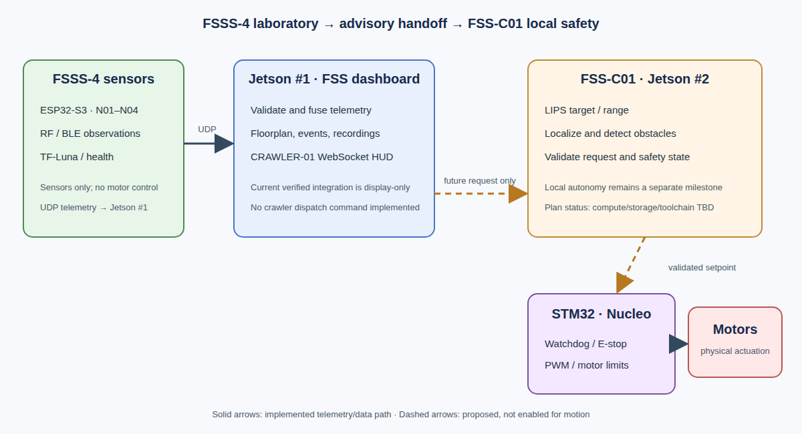
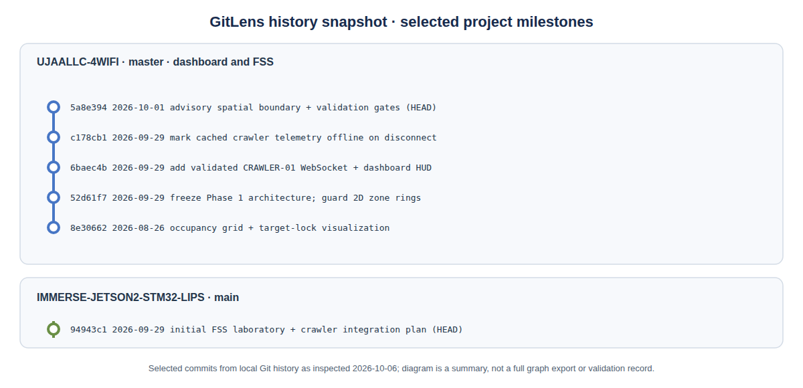

FSS Node Laboratory and Crawler Integration Plan
Project: UJAALLC-4WIFI (github.com/mieirs-hue/UJAALLC-4WIFI)
Host: Jetson #1 — Jetson Orin Nano, Ubuntu, GL-MT3000 Wi-Fi address verified as 192.168.8.196 on 2026-10-06 (accessed via VS Code Remote Tunnel)
Plan date: 2026-09-29 · Status review: 2026-10-06
Master log: https://gemini.google.com/app/7330c42c5dfb9a9e
1. Architecture Freeze: FSSS-4 Laboratory
UJAALLC-SPIRAL is the separate repository for the 24-node/trilateral-motion research stream. Its N05–N24 expansion remains deferred to Phase 2; the original four FSS nodes remain the Phase 1 laboratory reference system. This concentrates engineering effort on the FSS-C01 crawler instead of multiplying integration variables. No 24-node live bring-up or integration with the crawler is established by this plan.
Frozen architecture (Phase 1)
FSSS-N01 ─┐
FSSS-N02 ─┼──► Jetson Orin Nano (Jetson #1)
FSSS-N03 ─┤ │
FSSS-N04 ─┘ ├── RF confidence / fusion
├── TF-Luna confirmation
├── audio / buzzer logic
├── event recording / replay
└── 3D dashboard
Rule
No architectural change to N01–N04 unless a real, reproduced defect appears. Every change is verified physically before it is saved.
2. Crawler Subsystem (FSS-C01)
FSS 4-node laboratory
│
▼
spatial event / target estimate
│
▼
crawler waypoint
│
▼
local crawler sensing
│
├── 360° LiDAR
├── camera
├── thermal
├── bumper sensors
└── IMU / drive telemetry
│
▼
deterministic navigation + safety

3. Validation Capabilities (N01–N04)
- RF baseline logic (baseline freeze during disturbance, per-node CONF thresholds)
- Buzzer/audio acknowledgement loop (audio_ready and last_audio_cmd round-trip telemetry)
- TF-Luna corroboration
- JSONL event recording and replay
- 3D visualization
- Fused target state (RF fusion + occupancy grid)
4. Milestones
Milestone A — Lock FSSS-4
Bring N01–N04 to a known-good, documented state. Stop changing the architecture unless a real defect appears.
Milestone B — Crawler local autonomy
Chassis, power, STM32 motor control, LiDAR, camera, thermal sensing, and safe waypoint following. The crawler is tested independently first:
manual waypoint → local obstacle avoidance → safe motor control → arrival
Milestone C — Connect the two
Only after A and B both work independently:
FSS event → target coordinate → crawler dispatch request → safety validation → crawler movement
5. Expansion Roadmap
| Phase | Scope |
|---|---|
| Phase 1 | FSSS-4 + crawler |
| Phase 2 | FSSS-24 + crawler |
| Phase 3 | Distributed field + mobile verification |
6. Milestone B Outline — Crawler Hardware and Power (Working Draft)
Items marked TBD are open decisions. Measured values replace estimates as parts arrive.
B1. Control hierarchy (safety authority)
AI / semantic reasoning (advisory only, never in the control loop)
│
Jetson: deterministic spatial fusion + navigation constraints
│
STM32: real-time actuator enforcement
│
Motors
The STM32 and local sensing can stop the crawler regardless of any higher-level recommendation.
B1a. Ollama advisory service — setup review, 2026-10-06
Official Ollama ARM64 release 0.35.1 was installed in the
development Jetson user's home directory because non-interactive sudo was
unavailable. The enabled systemctl --user service responds at
http://127.0.0.1:11434/api/version and
/api/tags. Its listener was verified as localhost-only.
This is a user-session service, not a verified unattended boot service;
operation after logout or reboot remains a separate validation gate.
No unrestricted 0.0.0.0 listener or wildcard CORS override was
configured. Ollama exposes an HTTP API; it is not the crawler WebSocket
interface. A backend on the same Jetson can query it locally. Access from
another Jetson or workstation requires an authenticated tunnel or a separately
validated, restricted proxy. Cloud features are disabled, and no dashboard,
sensor, or motor-control code was wired to the service.
The qwen2.5:3b download completed successfully; the local
/api/tags endpoint listed its Q4_K_M model weights (approximately
1.93 GB), while /api/ps confirmed that no model was loaded.
At the setup check, the host had approximately 7.3 GiB RAM, less than
1 GiB available, and no swap. The service is limited to 768 MiB of host
memory, one loaded model, and one concurrent inference request. Downloading
model weights does not validate inference; loading or generating with the
requested qwen2.5:3b is deferred until memory headroom is
established and appropriate limits are reviewed. The GPU discovery log
reported the Orin GPU through CUDA 13, but no model inference or acceleration
benchmark has been verified. Model output remains advisory only and must never
authorize motion or bypass STM32 safety enforcement.
B2. Chassis and mechanical
- Drive type (tracked or wheeled): TBD
- 360° LiDAR mounted highest, with an unobstructed horizontal field
- Camera and thermal sensor forward-facing, rigidly co-mounted
- Bumpers on front and rear
- Onboard compute: TBD
B3. Power architecture
- Main battery chemistry, voltage, and capacity: TBD
- Separate motor rail and logic rail so motor current spikes cannot brown out compute or sensors
- Main fuse at the battery
- Physical E-stop that removes motor power in hardware, independent of software
- Regulated supplies for compute and sensors at each component's rated input
- Battery voltage and current monitoring reported in telemetry
| Component | Rail voltage | Typical current | Peak current | Source |
|---|---|---|---|---|
| Drive motors | TBD | TBD | TBD | measure |
| Onboard compute | TBD | TBD | TBD | datasheet / measure |
| 360° LiDAR | TBD | TBD | TBD | datasheet |
| Camera | TBD | TBD | TBD | datasheet |
| Thermal sensor | TBD | TBD | TBD | datasheet |
| STM32 + IMU + bumpers | TBD | TBD | TBD | datasheet |
B4. STM32 motor control responsibilities
- Owns motor PWM directly
- Command watchdog: stops motors if no valid command arrives within a set timeout (value TBD)
- Enforces speed and acceleration limits
- Bumper contact and E-stop input cause an immediate stop
- Reports wheel/track encoder, IMU, and fault telemetry upstream
B5. Local autonomy test ladder
| Gate | Test | Pass criterion |
|---|---|---|
| B-1 | Motors bench-tested with wheels/tracks lifted | Correct direction and speed response |
| B-2 | Watchdog and E-stop test | Motors stop on command loss and on E-stop |
| B-3 | Low-speed manual drive | Stable, controllable motion |
| B-4 | Bumper stop | Immediate stop on contact |
| B-5 | LiDAR obstacle stop | Stops before a placed obstacle |
| B-6 | Manual waypoint | Reaches a waypoint entered by the operator |
| B-7 | Waypoint with avoidance | Reaches the waypoint around an obstacle |
B6. Dispatch interface (draft, for Milestone C)
- Dispatch request: source event ID, target waypoint (x, z in feet, dashboard frame), confidence, timestamp
- Crawler status: state, pose, battery, active faults, last acknowledged request
- The crawler validates every request against its own safety state before moving.
7. Dashboard and telemetry integration status
The UJAALLC-4WIFI dashboard contains a CRAWLER-01 [JETSON #2] panel and a
dedicated /ws/crawler/{crawler_id} WebSocket. The gateway validates
the crawler ID and required telemetry fields (pose, heading, battery,
LIPS target/range, and STM32 RPM, motor temperature, and E-stop state), retains
the latest valid packet, and relays connection and telemetry messages to browser
clients. The UI labels a disconnected crawler offline rather than treating
cached values as live.
Safety and scope: This gateway is a display/telemetry integration. A crawler panel or spatial advisory coordinate is not a dispatch implementation, surveyed waypoint, safety-rated stop, or permission to move. No crawler motion command path is documented as implemented in this plan.
Observed status review — 2026-10-06
- User-reported hardware status: The microphone and speaker are not connected; wiring and audio validation are deferred until tomorrow. No live microphone acquisition or speaker output is claimed.
- User-reported device address:
http://192.168.5.1was supplied for the ESP32-S3/Nucleo setup. Device identity, network reachability, and the page's function have not been verified. ESP32-S3 and Nucleo-L476RG are distinct boards; this address does not establish which board hosts the page or replace the Jetson dashboard address. - The dashboard was started on the development Jetson at
http://127.0.0.1:8000; the page returned HTTP 200 and the browser connected to/ws/dashboard. - The CRAWLER-01 panel reported DISCONNECTED / STANDBY during the check. No ESP32/Nucleo USB serial device was enumerated on that host; therefore no MCU or crawler live telemetry was verified.
- At the initial check, Jetson #1 was on FWA_ZG7P6R at
192.168.1.174; the plan's earlier192.168.1.160value did not match that observed address. Later on 2026-10-06, the Jetson successfully joined theGL-MT3000-893SSID and received DHCP address192.168.8.196/24with gateway192.168.8.1. This verifies association and current routing only; a persistent DHCP reservation, repeat-after-reboot behavior, repeater/internet behavior, and other clients' reachability were not verified. - The dashboard remained bound to
127.0.0.1:8000after the cutover. Its local HTTP page still returned 200. Remote LAN reachability was neither configured nor tested; interactive dashboard controls are not exposed on the new Wi-Fi network. - The I2C LCD responded at bus 7 / address
0x27during an earlier host check. The user subsequently reported seeing the two-line company splash; that visual confirmation is user-reported, not an instrumented measurement.
8. GitLens repository history and project evidence
Figure 2 is a compact redraw of the GitLens commit-graph/history view, using commit IDs, dates, and subjects available in the local repositories on 2026-10-06. It summarizes selected milestones, not every commit, branch, test, or hardware-validation result. The crawler/STM32 repository currently has one initial planning commit; its existence does not establish that the crawler hardware or toolchain is commissioned.
UJAALLC-SPIRAL — related FSSS research repository
mieirs-hue/UJAALLC-SPIRAL
is a private GitHub repository whose metadata describes a 24-board trilateral
motion-detection project. Its accessible project documentation describes an
FSSS dashboard and telemetry hub with FSS-N01–N04 as the active node set; the
repository is therefore tracked here as the preserved Phase 2 expansion stream,
not as a currently verified live 24-node deployment. The main-branch history
visible on 2026-10-06 includes 76829ab (initial FSSS-24 topology
import) and 62ec67a (spatial-boundary research documentation).
Inspection of the accessible dashboard source and indexed repository code did not verify an Ollama integration, an FSS-C01 crawler service, LIPS telemetry, or a crawler WebSocket. Accordingly, this plan does not assign UJAALLC-SPIRAL as the confirmed Jetson #2 crawler dashboard. That relationship remains an open repository-verification item; the crawler telemetry currently documented in Section 7 is in UJAALLC-4WIFI. Its contents were initially inspected through the connected GitHub integration. After the user signed in on 2026-10-06, the private repository opened successfully in the browser. Local Git still lacked HTTPS authentication during the subsequent check; UJAALLC-SPIRAL has not yet been added as a complete Git checkout in Explorer, and a local GitLens graph for it has not been verified.
A second dashboard source was found under
FSSS-24-DASHBOARD-FOUNDATION-1.0/jetson_engine/dashboard_server.py
in UJAALLC-SPIRAL. Its Git blob
fe0f2e38d795ac7d5cf2e39465f2dfd64f016fbc was verified when importing
a source-only preview into the local workspace. The folder is explicitly
labeled as a preview, not a Git clone; it lacks the supporting modules and
has not been launched as a live dashboard. Its inspected source exposes the
FSS fleet dashboard, with no Ollama or crawler interface found. The Gemini
conversation at the
user-provided dashboard reference redirected to an unauthenticated sign-in
page, so the dashboard described in that conversation remains unidentified.

Repository role matrix — Phase 1 and Phase 2
This matrix distinguishes observed repository contents from planned deployment roles. Shared or similar code does not establish a live connection between repositories. The existing four-node laboratory and crawler safety boundaries remain unchanged.
| Repository | Phase 1 responsibility | Phase 2 responsibility / next gate | Evidence and access |
|---|---|---|---|
| UJAALLC-4WIFI | Four-node laboratory reference; Jetson #1 dashboard, fusion/advisory display, and CRAWLER-01 telemetry panel. Jetson-connected LCD diagnostic HUD. | Preserve N01–N04 behavior while validating any expanded topology and crawler telemetry contract. Dispatch remains a future, separately validated interface. | Local checkout; dashboard page verified locally. Crawler panel was disconnected, so live Jetson #2 telemetry remains unverified. |
| UJAALLC-SPIRAL | Preserved research reference; no replacement of the Phase 1 four-node system. User identifies an intended Jetson #2/sensors/Ollama role, which remains unverified in the inspected source. | FSSS-24 expansion research, including N05–N24. Identify the intended crawler/Ollama revision and validate interfaces before assigning a runtime role. | Private repository accessible through GitHub integration and, after sign-in, the browser. Foundation dashboard source-only preview added locally; complete clone and GitLens graph pending Git authentication. |
| predator-detector-UJAALLC | Related ESP32 lighthouse firmware, Jetson RF telemetry/spatial-engine work, and build/guarded-flash workflow. LCD driver/HUD copies and usage guidance are saved locally. | Reconcile shared implementations and board profiles before reusing them in expanded deployments; no independent live crawler/Ollama role is established here. | Local checkout. LCD/HUD software tests passed; this does not prove MCU flashing or live sensor arrival. |
| IMMERSE-JETSON2-STM32-LIPS | FSS-C01 integration plan, thesis evidence, and Jetson #2 / STM32 / LIPS commissioning requirements. STM32 remains the intended real-time actuator safety authority. | Extend the validated crawler integration to the expanded field only after independent crawler safety and telemetry gates pass. | Local checkout containing this HTML/Word plan and figures. Hardware/toolchain commissioning and motor safety tests remain unverified. |
9. Next evidence gates
| Gate | Evidence required | Current state |
|---|---|---|
| Ollama inference | Model weights present; sufficient host/GPU memory; successful bounded local generation without impairing telemetry; user-service restart behavior verified | Local API and service verified; model generation, dashboard integration, and unattended boot behavior not verified |
| UJAALLC-SPIRAL role | Authenticate a local checkout; identify the intended Jetson #2/Ollama revision and verify its crawler/LIPS interface against the integration contract | GitHub integration and signed-in browser access verified; local Git authentication pending. Inspected source did not verify crawler, LIPS, or Ollama services |
| Network identity | GL-MT3000 association, gateway, Jetson address, DHCP reservation and reboot persistence verified | SSID, gateway, DHCP address, and route verified 2026-10-06; reservation/persistence pending |
| Sensor nodes | One positively identified N01–N04 ESP32-S3 appears on USB; matching build and telemetry verified | No MCU USB serial device seen in the 2026-10-06 check |
| Crawler telemetry | Jetson #2 connection plus changing, timestamped LIPS/STM32 telemetry in dashboard | Panel was DISCONNECTED / STANDBY |
| Local safety | Independent STM32 watchdog, hardware E-stop, speed limits, and obstacle veto pass on a raised chassis | Unverified; hardware/toolchain commissioning remains required |
| Dispatch | Versioned, expiring request plus Jetson #2 and STM32 local authorization tests | Not implemented; out of scope for the current display gateway |